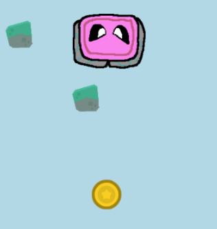

My Learning Journey
I have been learning HTML and CSS, as well as Javascript since September 2025, and I have made lots of progress so far. I have been using many sites like freecodecamp.org and Certiport to get my HTML certifications
As for Javascript, I have mainly been using code.org to learn it and using Certiport again to earn my certifications
My Javascript Projects
Flyer Game 1

This let me put what I know about sprite manipulation and user interaction into play and put my own twist on it.
Flyer Game2

This taught me the basics of sprite manipulation and user interaction in javascript.
Soap Jump
Although sprig's coding engine is a simplified version of Javascript, it still helped me roll into learning Javascript and brought out my creative spirit for making games.